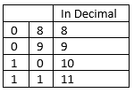
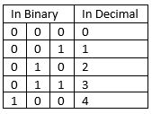
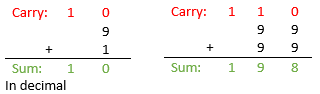
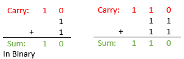
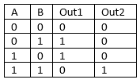
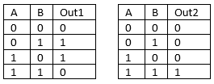
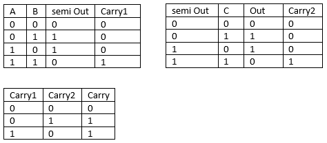

×
Addition
In introduction we mentioned that main purpose of computers is calculation, but at the same time we learned that what they actually do is simple 3 logic operations AND, OR, NOT.
In this tutorial we will learn how to use those operation to perform addition.
Number representation
As we know Boolean logic takes only two types inputs True and False. Computers represent them as voltage level, high –1 and low – 0, - this gives us already two numbers that we can work with and they are called binary.
If we think of decimal system which we are using every day we can say that it actually uses 10 numbers from 0 to 9.
If we want to represent number higher than 9, we use two or more numbers in conjunction. Same way computers can represent numbers higher than 1, for example:


Each digit in binary system we call bit. Number of bits computer can process at once defines maximum number it can represent.
In computer architecture minimum number of bits used to represent any value is 8 (1 bait) and modern computers use 64 as nominal number of bits used to store data.
In this tutorial we will focus on how computers perform operations rather than interpret their outcomes so this tutorial won’t cover how to convert binary to decimal or how negative and floating points numbers are represented.
Binary addition
Adding binary numbers is actually easier than adding them in binary because of lower range of numbers that can be added together (only 0s and 1s). Here is example comparison of both systems:


If we consider adding only 2 numbers in binary, we can only get 4 outcomes:

If we construct separate tables for output1 and output2 we will get 2 truth tables:

Circuit constructed this way is called half adder. (it can be built with use of gate which we constructed in previous tutorial).
In one of previous examples we got a situation when we add 1+1 + carry from previous addition, which makes 3 inputs for this addition. To solve this problem, we can divide this process into few smaller steps: we can construct truth tables for 2 inputs and additional ones comparing output with input3 and finally both carries from these operations:

As we can see final table has only 3 possibilities- that because positive outcomes exclude themselves for both caries. Circuit constructed this way is called half adder.
Finishing this task will require building half adder and then using it to build full adder.